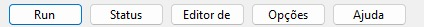
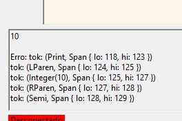
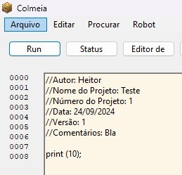

Recursos da IDE
Explore os recursos avançados que a IDE FLDSMDFR oferece para aumentar sua produtividade:

Navegador Secundário: equipado com recursos próprios para movimento direto do braço robótico.

Porta Serial: Retorno da porta serial que faz a comunicação da IDE diretamente com o controlador do braço robótico.
Exemplo de Programa
Um exemplo de programa básico, feito na linguagem Mel, que consiste no movimento da "cintura" do equipamento:

Programa Básico feito com Mel, funcionando no braço robótico através da Interface de Desenvolvimento (IDE) FLDSMDFR.